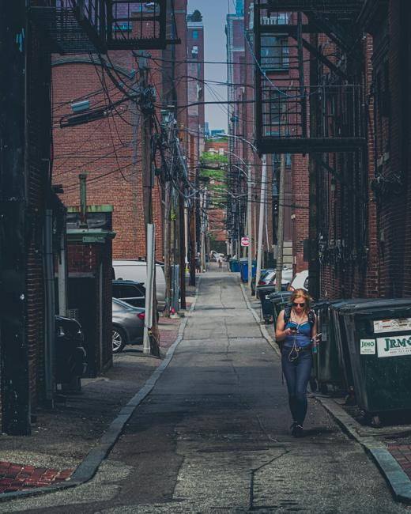
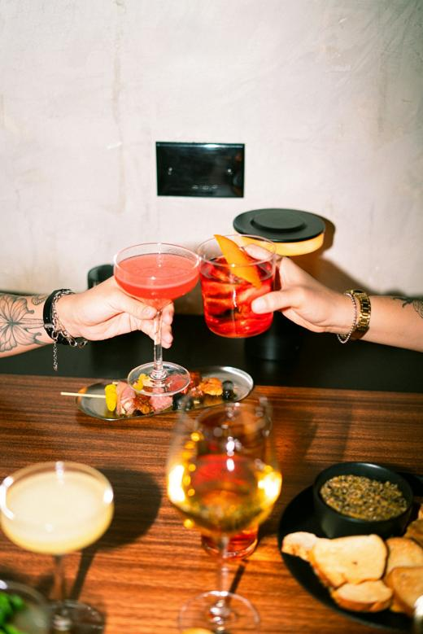
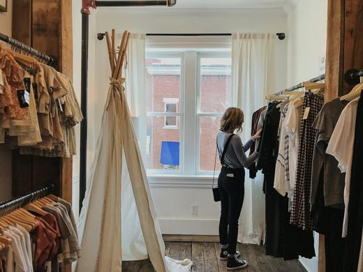
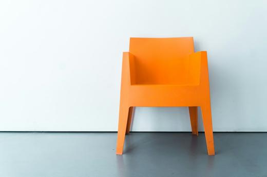
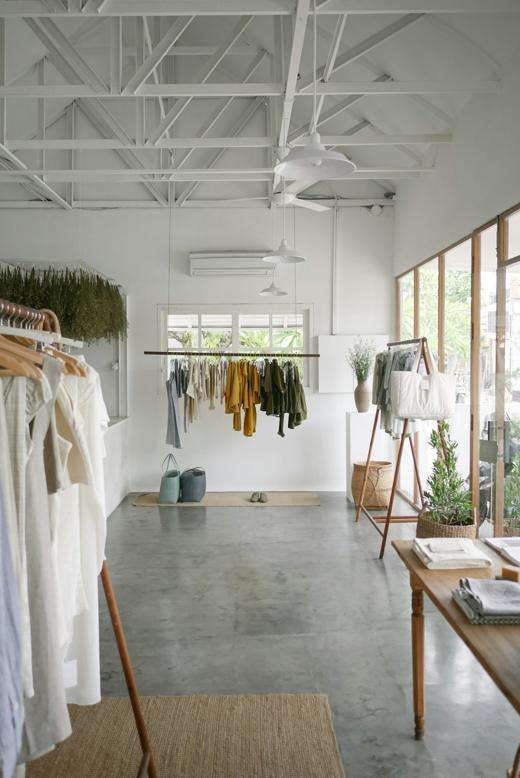
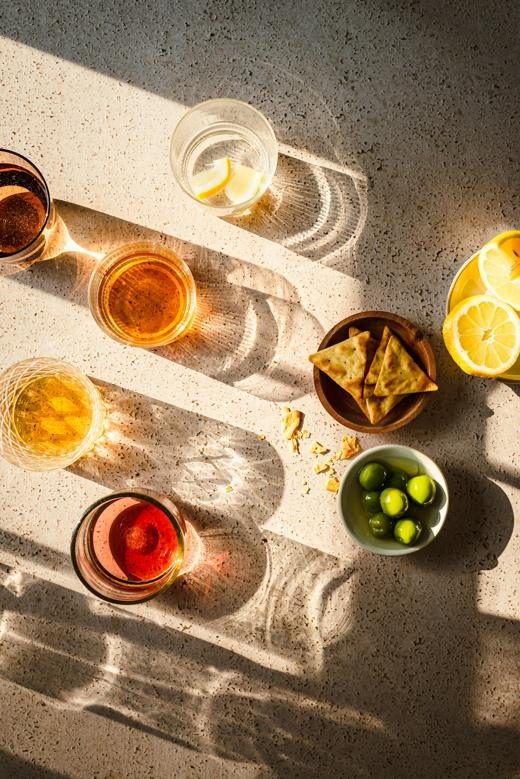
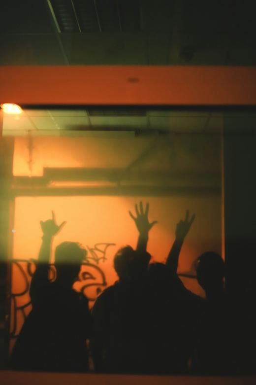
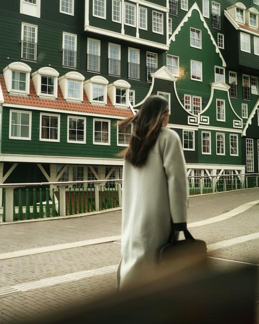
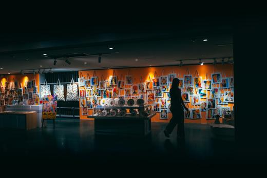

I verbi irregolari non seguono le regole dei verbi regolari. Irregular verbs don't follow the rules of regular verbs.
| andare to go | dare to give | fare to do / to make | stare to stay / to be | |
|---|---|---|---|---|
| io | vado | do | faccio | sto |
| tu | vai | dai | fai | stai |
| lui / lei / Lei | va | dà | fa | sta |
| noi | andiamo | diamo | facciamo | stiamo |
| voi | andate | date | fate | state |
| loro | vanno | danno | fanno | stanno |
| bere to drink | rimanere to stay / to remain | scegliere to choose | |
|---|---|---|---|
| io | bevo | rimango | scelgo |
| tu | bevi | rimani | scegli |
| lui / lei / Lei | beve | rimane | sceglie |
| noi | beviamo | rimaniamo | scegliamo |
| voi | bevete | rimanete | scegliete |
| loro | bevono | rimangono | scelgono |
| sedere to sit | tenere to hold / to keep | togliere to take off / to remove | |
|---|---|---|---|
| io | siedo | tengo | tolgo |
| tu | siedi | tieni | togli |
| lui / lei / Lei | siede | tiene | toglie |
| noi | sediamo | teniamo | togliamo |
| voi | sedete | tenete | togliete |
| loro | siedono | tengono | tolgono |
| dire to say / to tell | morire to die | riuscire to manage to / to succeed | |
|---|---|---|---|
| io | dico | muoio | riesco |
| tu | dici | muori | riesci |
| lui / lei / Lei | dice | muore | riesce |
| noi | diciamo | moriamo | riusciamo |
| voi | dite | morite | riuscite |
| loro | dicono | muoiono | riescono |
| salire to go up / to get on | uscire to go out / to leave | venire to come | |
|---|---|---|---|
| io | salgo | esco | vengo |
| tu | sali | esci | vieni |
| lui / lei / Lei | sale | esce | viene |
| noi | saliamo | usciamo | veniamo |
| voi | salite | uscite | venite |
| loro | salgono | escono | vengono |
Molti verbi hanno -g- con io e loro:
esco, esci, esce, escono
but: usciamo, uscite
tieni, tiene · vieni, viene
only tu and lui/lei
| volere to want | dovere to have to / must | potere can / may / to be able to | sapere to know / to know how to | |
|---|---|---|---|---|
| io | voglio | devo | posso | so |
| tu | vuoi | devi | puoi | sai |
| lui / lei / Lei | vuole | deve | può | sa |
| noi | vogliamo | dobbiamo | possiamo | sappiamo |
| voi | volete | dovete | potete | sapete |
| loro | vogliono | devono | possono | sanno |
capacità · I know how
possibilità · it's (not) possible
Arte, moda e un caffè Art, fashion and a coffee
Yasha è a Milano per lavoro. Il venerdì sera esce dall'ufficio e va alla Fondazione Prada, in Largo Isarco. È un centro di arte contemporanea in una vecchia distilleria. Qui l'arte e la moda stanno insieme. Yasha vuole vedere la «Haunted House», un edificio tutto coperto di foglia d'oro. Nelle sale i visitatori possono guardare installazioni, video e sculture, ma non possono toccare le opere. Dopo la visita Yasha va al Bar Luce, un bar in stile anni Cinquanta creato dal regista Wes Anderson. Beve un caffè, sceglie un dolce e rimane al bar un'ora. Poi sale sulla metropolitana e torna in albergo. Domani deve lavorare, ma sabato vuole tornare: sa che ci sono sempre nuove mostre!
Translation
Yasha is in Milan for work. On Friday evening she leaves the office and goes to the Fondazione Prada, in Largo Isarco. It's a contemporary art centre in an old distillery. Here art and fashion go together. Yasha wants to see the “Haunted House”, a building completely covered in gold leaf. In the rooms visitors can look at installations, videos and sculptures, but they can't touch the works. After the visit Yasha goes to Bar Luce, a 1950s-style café created by the film director Wes Anderson. She drinks a coffee, chooses a cake and stays at the café for an hour. Then she gets on the underground and goes back to the hotel. Tomorrow she has to work, but on Saturday she wants to come back: she knows there are always new exhibitions!









★Da rivedereTo review
📩 Invia i risultati a Irene · Send your results to Irene
Irene riceve il punteggio, i punti da rivedere e le tue risposte dell'intervista. · Irene receives your score, the points to review and your interview answers.
Le tue risposte restano salvate su questo dispositivo, anche se chiudi la pagina. · Your answers stay saved on this device, even if you close the page.